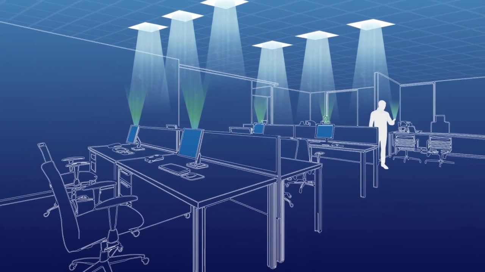

Many households in our country already have an internet connection and a lot of us have also experienced connection or speed issues. But what if there was a way to connect to the internet and benefit from a direct connection with much faster speeds that too just with the LED bulbs we use at home? Let's Enter Li-Fi.
Li-Fi stands for Light Fidelity and is a Visible Light Communications (VLC) system which runs wireless communications that travel at very high speeds. The main function of this technology is to transmit data via light.
The Li-Fi (Light Fidelity) technology was coined by the German Scientist namely Harald Haas. Haas envisioned light bulbs that could act as wireless routers. This technology is idyllic for high-speed wireless communication in a restricted region, and it offers many benefits over Wi-Fi technology such as high bandwidth, ease of use, efficiency, and safety. The data transmission in this technology can be done using light because the light intensity changes quicker than the human eye for capturing. It holds the key to solve challenges faced by 5G. The range of data transmission in Li-Fi is 100 times faster than Wi-Fi.
These systems can communicate from street lights to auto-piloted cars using their headlights.You can also connect to the internet simply by being within the range of the LED beam. As the light speed is superior hence the data communication speed is also faster in the existing system. Furthermore, this technology can be implemented for speedy data access for the laptops, and gadgets that will be transmitted during the beam in a room. The ramifications of this are huge, especially with the internet of things in full swing and the much mooted spectrum crunch is expected to bite increasingly hard in the coming years.
How Li-Fi Works?
Li-Fi is a VLC (visible light communications) system and the speed of this system is very high. Li-Fi uses common household LEDs to allow the data to transfer and increase the speed up to 224 Gigabits/sec. The data transmission of this technology can be done via illumination. The essential devices of this system are the bright light emitting diodes. The ON/Off activity of LEDs permits a type of data transmission in the form of binary codes but the human eye cannot recognize this transform and the bulbs appear with a stable intensity.
But why LEDs specifically?
Why not other lights? Well, it all comes down to speed. Traditional incandescent light bulbs are too slow. The best at the moment is LED, though this may change in the future. All what the system is doing is tapping a form of light transmission that is already readily available and widely accessible, which makes their barriers to entry far more surmountable. But there are still barriers.
Benefits of LiFi
When a light source is used to transmit data, it becomes unbelievably fast. Over 20 movies could be downloaded per second over LiFi, while it takes at least 10 minutes to a download movie over WiFi. Haas credits the faster speed to the fact that LiFi is limited to a smaller area compared to radio signals, resulting in faster transmission. With LiFi, the network is more secure. LiFi is only restricted to the area where the light is glowing, so there is no way your neighbors can steal your bandwidth if your curtains are drawn or windows closed. LiFi cannot pass through walls, so only you and the people directly in the space where the light bulb is glowing will be able to access the network. Secondly, data can be transmitted even when the lights are dimmed. Haas has plans to take LiFi to even the remotest of places where Internet is mostly inaccessible. With a simple Lifi-enabled LED bulb, the Internet can be accessed anywhere as long as you don’t walk on the other side of a wall.
But light can travel through water.
LiFi has been used for several underwater purposes. Underwater vehicles such as submarines can communicate using light, and become more effective at what they do. Interestingly, Local Internet access becomes easier with LiFi. Street lights with LiFi capability could now become hotspots, similar to WiFi hotspots. People walking down the street could easily access the Internet on their phones, making night-time traveling safer and also providing local information about a region to tourists.
Are Li-Fi products available in the market?
Currently, there are few products from Pure-LiFi like LiFi-X or Li-Flame, that try to ease this hurdle as they are comparatively easier to set up.
One of those is a Li-Fi ceiling unit connecting an LED light fixture and Li-Fi-XC that connects to a device via USB, providing about 43Mbps from each LiFi-enabled LED light.
Well-known lighting brand Philips has also jumped to invest in Li-Fi, now offering full and integrated Li-Fi services including LED products and Li-Fi.
Also, reports suggested that Apple may build future iPhones with Li-Fi capabilities. A Twitter user found that within its iOS 9.1 code there were references to Li-Fi written as 'LiFiCapability' hinting that Apple may integrate Li-Fi with iPhones in the future. Founded by Maite Brandt-Pearce and Mohammad Noshad in 2013, Charlottesville-based Li-Fi firm VLNComm has received backing from the US Department of Energy and the National Science Foundation. It has also released three Li-Fi products: a desk light, USB stick and LED panel.
Will Li-Fi replace Wi-Fi in the near future?
LiFi requires specialized LEDs to work flawlessly. There is a huge variety of LED bulbs in the market, each with different specifications. It is not necessary that your LED bulb will be compatible with your choice of LiFi adapter. Also, as LiFi works only in the line of sight, you will need to buy at least one LED bulb for each corner of your room. But Researchers have found multiple solutions to this problem that will let you use almost every existing LED bulb as a LiFi router. For integration with existing LEDs sans the inbuilt hardware, one would need extra adapters for their devices. Needless to say, this further increases the cost.
Currently, there are few products from Pure-LiFi that try to ease this hurdle as they are comparatively easier to set up but they still require extra wiring and adapters which needs to be carried around if you’re using it on laptop or smartphones.
Also, connecting to the internet over Li-Fi is as confined as the light from that LED. It can’t penetrate walls like WiFi. Just one obstacle, and bam you’re disconnected! You would also need to be in a defined range to use it efficiently as light intensity decreases with distance.
Also, You may not be able to play your favorite game in the dark by switching off your lights. There’s a debate to use infrared light instead of LEDs in LiFi to make it workable for nights as well. This, however, is prone to reduce the data speed.
CONCLUSION
These are not problems, but just limitations. Almost all of these can be overcome, as scientists and engineers over the world are researching the domain continually at a steady pace. Li-Fi can become a great communication method for home networks. It’s just a smartphone away from becoming popular; as soon as we see Li-Fi compatible smartphones in the market, it won’t be long before they find a place in our household.
Until then, let’s stick to our beloved WiFi routers.
Leave a Reply